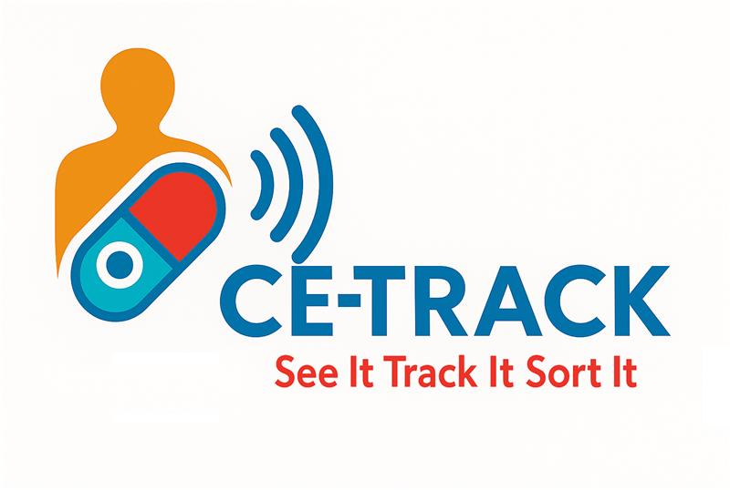
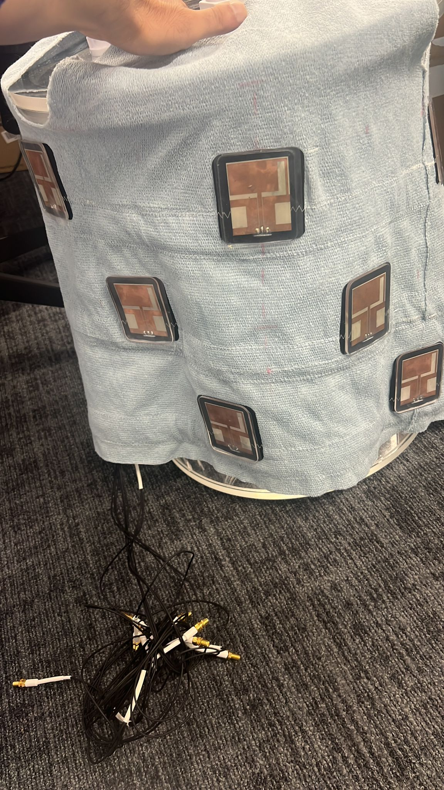
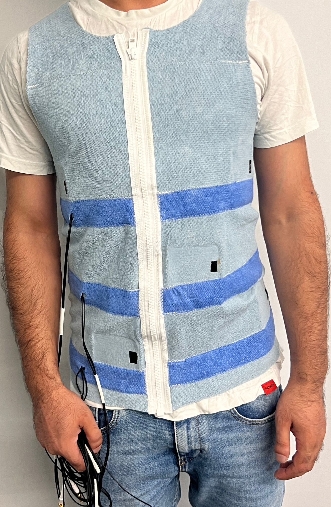
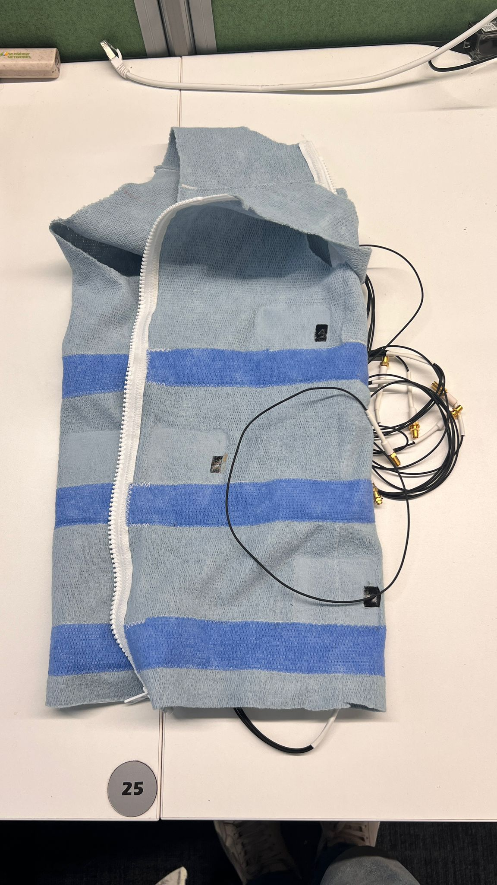
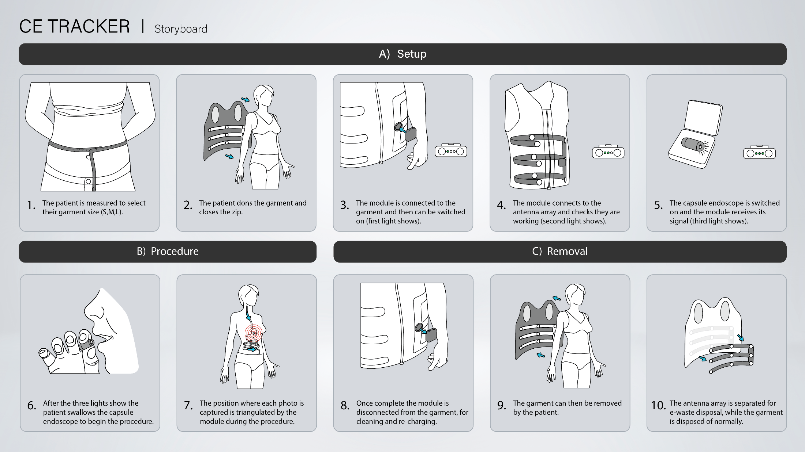
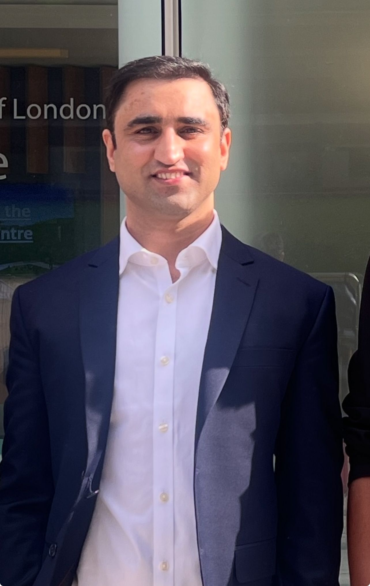

CE-TRACK
See It. Track It. Sort It.
A smart wearable vest that tracks a tiny camera-pill inside your body — so doctors know exactly where problems are, without surgery.
Pinpoint accuracy
Non-invasive
NHS-ready
Bowel cancer is the 2nd biggest cancer killer in the UK — yet 9 in 10 survive when caught early.
90%
Survival when caught at the earliest stage
1.9M
Projected colorectal cancer deaths globally by 2040
>50%
Of eligible people skip screening entirely
1,000s
Patients on NHS waiting lists for diagnostic tests
The bottleneck is diagnostic capacity, not patient need.
NHS hospitals are at breaking point. Thousands wait for tests that could save their lives.
Nearly 1 million colonoscopies are performed every year in the UK. The system is under strain.
Screening Demand
- Demand rising faster than hospital capacity
- 9 in 10 survive if diagnosed early
- Increasing referrals, staff shortages
- NHS hospitals reaching breaking point
Hospital Colonoscopy
- Invasive procedure
- Requires specialist staff
- Limited hospital capacity
- Estimated annual spend: £372M
Capsule Endoscopy
- Non-invasive
- Easy for patients
- Enables large-scale screening
- ⚠ No real-time tracking of the capsule
- ⚠ No localisation of abnormalities
The visible problem — rising cancer deaths — hides deeper systemic bottlenecks that block scalable screening.
Colonoscopy Capacity Constraints
Colonoscopy services are operating near maximum capacity
Low FIT Screening Uptake
Participation in faecal immunochemical test (FIT) programmes remains limited
Limited Scalability of Current Diagnostics
Existing capsule endoscopy systems lack scalable tracking and localisation
1.9M
Colorectal cancer deaths
projected by 2040
Opportunity for Innovation
Scalable, patient-friendly screening solutions urgently needed
Capsule endoscopy is patient-friendly, but clinically limited without precise localisation. CE-Track closes that gap.
1
Ingestible Capsule
Capsule is swallowed and emits RF signals through tissue
➔
2
Wearable RF Vest
Integrated antenna array receives capsule signals
➔
3
Processing Module
RF trilateration using RSSI, ToA & AoA computes 3D position
➔
4
Clinical Visualisation
Real-time GI imaging with capsule position & disease detection
RF-Based Trilateration
AI-Assisted Analysis
Sub-cm Accuracy
Wearable & Ambulatory
From antenna arrays to an ambulatory vest architecture designed for clinical translation.

Antenna sensor array on phantom

Wearable RF vest — worn

Wearable vest — flat view
Lab-Tested
Proven to work in realistic body models
<1 cm
Tracks the pill to within a centimetre
Walk & Wear
Patient wears the vest and goes about their day
06
Patient Workflow

Today's commercial capsule systems solve imaging, not localisation.
| Feature |
Olympus |
Medtronic |
Capsovision |
Intromedic |
CE-Track |
| Capsule Imaging |
✓ |
✓ |
✓ |
✓ |
✓ |
| Capsule Localisation |
✕ |
✕ |
✕ |
✕ |
✓ |
| Real-time Tracking |
✕ |
✕ |
✕ |
✕ |
✓ |
| Wearable Antenna System |
✕ |
✕ |
✕ |
✕ |
✓ |
| AI-Assisted Analysis |
✕ |
✕ |
✕ |
✕ |
✓ |
CE-Track enables sub-centimetre localisation and real-time tracking for capsule endoscopy
Procedure Volume
6.3M
Colonoscopies per year — USA
~3M
Procedures per year — Europe
~1M
Colonoscopies per year — NHS (UK)
USA
Europe
India
Brazil
South Africa
Commercial Upside
$0.97B
Capsule Endoscopy Market (projected)
£1.2B+
UK GI diagnostics market
Demand is already established. CE-Track adds value by making a non-invasive pathway clinically actionable and economically scalable.
Stage 1
Primary care triage
Identify patients suited to a capsule-first diagnostic pathway.
→
Stage 2
Community diagnostics
Deploy CE-Track in local hospitals and diagnostic centres.
→
Stage 3
GI specialist review
Escalate only the patients who need targeted intervention.
→
Stage 4
NHS procurement
Scale through umbrella procurement once clinical and economic value is proven.
Revenue Model
- Platform revenue from localisation software and workflow tooling
- Usage fee per capsule procedure and diagnostic report
- Strategic partnerships with insurers and screening programmes
Initial wedge: NHS diagnostic pathways. Expansion follows through national procurement and home-based screening models.
Pricing Model
£400M
Potential annual revenue
£150M
Estimated annual NHS savings
Long-term model: expand into Europe and the USA, then extend into home screening, capsule rental and AI-supported reporting.
Capital required
£4–5M
To complete first-in-human validation, productisation and initial NHS deployment.
Clinical
Validate in patients
- First-in-human feasibility study
- Regulatory pathway and evidence package
Platform
Productise CE-Track
- Real-time localisation and workflow software
- Wearable RF hardware and AI-assisted diagnostics
Deployment
Launch NHS pilot
- Initial deployment in GI diagnostic centres
- 24-month path to first NHS pilot
24-month objective: first NHS pilot, regulatory progress and a platform that can scale from the UK into Europe and the USA.
Research Begins
Patent Filed
Prototype Built
US Patent Granted
First-in-Human
Antenna design & tracking algorithm at QMUL
International PCT patent for the localisation system
Wearable vest validated with sub-cm accuracy
US patent granted. LIHE programme starts
Feasibility study & NHS pilot partnership
2 patents
PCT + US granted
2026
first test in a real patient
NHS
clinical partners ready
Clinical leadership, RF systems expertise, translational engineering and commercialisation in one team.
Mo Thaha
Clinical Lead
QMUL & Barts Health
Akram Alomainy
RF Systems Lead
QMUL

Muhammad Qamar
RF Design Engineer
QMUL
Subramaniam Murugesan
Research Engineer
QMUL
Ben Golland
Commercialisation Lead
QMI
Yunus Kutlu
Commercialisation Manager
QMI
Ellie Herrington
Patient Voice & PPIE
Bowel Cancer Survivors